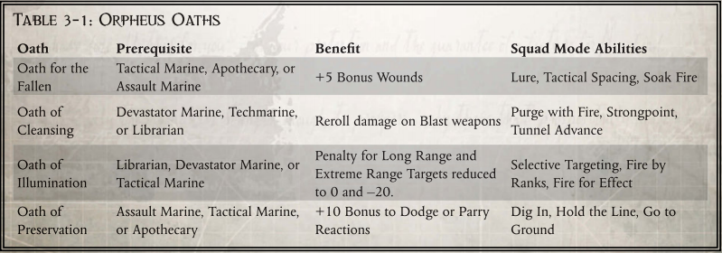

俄尔普斯突出部特殊能力
"泰伦是一个狡猾的敌人。要战胜他们千变万化的能力，就必须仔细圣典法典，找出最合适的技巧。
——极限战士死亡守望神圣之主卡修斯牧师
活跃在俄尔普斯突出部的星际战士们有机会践行该组织的使命：屠杀异种。大衮虫巢舰队的兵力庞大，每次成功征服都会焕发新的活力。成功的唯一希望就在于完全压制这些部队，然后清除他们蹂躏过的世界的污点。这场冲突不仅仅是一场个人生存之战。这确实是一场至关重要的战斗，对于帝国和全人类的存亡都是必不可少的。
俄尔普斯行为
俄尔普斯突出部中的远征部队捉襟见肘。只有在突出部领导层有意识地集中防御时，才会有足够的资源用于冲突。因此，死亡守望杀戮小队的重要性不仅在于他们的专业技能，还在于他们的效率。尽管许多人可能没有意识到，远征军几乎是依靠死亡守望才得以有效地与虫巢舰队大衮作战。
在这一地区服役的许多战斗兄弟已经意识到了这一事实。因此，他们的观念也开始发生变化。一些人承认并接受了这一额外的责任。其他人则变得更加鲁莽，因为他们不信任与远征军的互动。一些人开始重视与泰伦群进行的看似无休止的战斗，而另一些人则因为有机会进行无休止的冲突而进入了一种近乎狂喜的状态。这些不同的哲学观可以代表新的个人性格。对于考虑改变角色性格的玩家，本节提供了几种特别适合在俄尔普斯突出部活动的性格。改变举止不需要Xp费用。有关 "个人举止 "的更多信息，请参阅《死亡守望》第 32 页。 随着泰伦群不断侵袭俄尔普斯突出部的各个世界，它也带来了无尽的憎恶。这些邪恶的异种几乎以所有可以想象到的方式冒犯着帝国。我们没有机会与这些敌人交流。相反，它们会无休止地吞噬和融合面前的一切生命。在吞噬的过程中，它们将自己的污秽之物散播到各处。曾经美丽的景色因它们的存在而窒息。一个世界的大气层被它们的孢子填满，变得无法呼吸。一个星球的所有乐趣可能很快就会被噩梦、污秽和生物传染病所取代，而这些正是泰伦的本质。很快，连这些肮脏的瘟疫也消失了。虫巢舰队吞噬了一切有价值的东西和美丽的事物，留下的只有灰尘。一些战斗兄弟对泰伦留下的可怕的生命浪费感到无比厌恶。他们无法接受泰伦吞噬无辜人类的生命和银河系的美景。人类利用资源开发世界，而泰伦却吞噬一切美好，只留下贫瘠的岩石。战兄在加倍努力打败这些异形的同时，也接受了彻底灭绝的概念。他们没有时间进行研究、分析，甚至是精心策划。这些星际战士将虫巢舰队的继续存在视为不可原谅的罪行。只要能迅速消灭它，让人类不再与肮脏的虫巢舰队共享银河系，任何消灭它的措施都是可以接受的。
谨慎
随着世界遭受泰伦侵袭，其生态环境也开始发生变化。新的生物席卷而来，将地貌变成了一个充满生物的致命环境，它们专注于吞噬星球上的生物质。虽然这些生物大多是攻击性动物，如各种刚特品系和撕裂虫群，但其他生物，如毛细管塔，看起来更像植物。然而，即使是这些植物也会出乎意料地致命，因为它们渗出的毒素和酸性物质甚至能穿透帝国最严密的防护设计。与此同时，许多异形都特别善于隐藏。恐怖生物经常潜伏在隐蔽的隧道、山丘或树枝中。在敌后的任何旅程中，都需要花费额外的时间和精力来防范这些致命的威胁。这种持续暴露在意外威胁面前的情况，即使是久经沙场的星际战士也会开始感到疲惫。对于某些人来说，唯一合理的方法就是在所有行动中都保持保守。在踏入陌生领域之前，必须采取必要措施将风险降至最低。秉承这一理念的战斗兄弟认为，在与未知威胁打交道之前，必须仔细辨别和测试它们。因为在这些充满敌意的外星生态环境中，有无数看似无害的生物可能隐藏着难以言喻的危险。这些看似无害的危险必须加以克服，否则任务可能会毫无理由地失败。这些星际战士坚持认为，必须采取一切合理的预防措施。
渴望
虫巢舰队 "大衮 "不断驶过俄尔普斯突出部。随着每一次新的征服，它的规模都会随着新舰船的诞生而扩大。在这些舰船中，有一些无人机在寻找新的生物质来源，以暂时满足泰伦虫群无休止的饥饿。这种横跨众多系统的持续增长要求远征军部队必须时刻警惕新的入侵。与此同时，受到虫群侵袭的星球也在不断地进行战争；它们消耗新生物质的速度与星球本身的增长速度一样快。在任何时刻，俄尔普斯突出部内都会发生数十甚至数百起不同的小规模战斗。
一些星际战士陶醉在与这些异种的持续战斗中。每一次额外的冲突都是满足他们肉搏欲望的机会。庞大的泰伦群为他们提供了大量面对熟练对手的机会，这些对手甚至能随机应变，战胜星际战士的实力。只有不断战胜这样的敌人，一些战斗兄弟才能感到满足。对这些战士来说，战斗的召唤几乎让他们上瘾。他们很乐意主动承担最危险的任务，因为他们知道这些任务能带来最大的挑战。这些战斗不仅仅是捍卫帝国之道的机会。相反，它们是星际战士享受冲突的一种方式；一种他希望永远不会放弃的快感。
愤怒
憎恨异形是帝国信条不可分割的一部分。当一个异种像虫巢舰队大衮那样具有强烈的毒性和破坏性时，这种憎恨就成了第二天性。数以百万计的人类——无论是旁观者还是战斗者——被泰伦摧毁了生命。甚至很少有人有机会试图逃离异种部队的愤怒。相反，他们往往在完全察觉到攻击之前，就在自己的家园中被吞噬了。那些意识到攻击来袭的人很少有机会试图逃离。一些能够逃离的人也只是来不及逃到另一个已经受到攻击的星系。渴求对这种行为负有责任的生物进行报复是人类的天性。然而，有些星际战士却将这种仇恨发扬光大。对他们来说，能够成功地对人类帝国犯下如此滔天罪行的物种的存在，就是对帝皇和原体的侮辱。他们的身体和灵魂都被熊熊燃烧的怒火吞噬，迫使他们采取最极端的行动。对于这些战斗兄弟来说，行动的号召是刻不容缓的。必须采取措施，以极端的偏见消除这一威胁。除了对异种的愤怒，他们几乎无法集中精力，必须立即采取持续行动消除异种。
保留
在泰伦行星攻击的过程中，战线经常会模糊和转移。帝国的据点可能会被袭来的孢子击中，或者掘蟒可能会从地底深处挖出隧道来破坏设施。在其他情况下，压倒性的攻势可能会分割战线，使两个或更多的远征军部队孤立无援，继续进行顽强的防御。通常情况下，死亡守望杀戮小队会被派往敌后纵深地带，试图找出并消灭泰伦的繁殖地或领导特定攻击的稀有标本。在上述任何一种情况下，星际战士都需要依靠自己的能力来躲避虫巢舰队 "大衮 "压倒性的数量。
对于某些战斗兄弟来说，这种作战方式已成为他们的第二天性。如果他们已经在敌后执行任务长达数月甚至数年，情况就更是如此。许多泰伦品系都拥有增强的身体感官，其探测能力远远超过未被强化的人类。要克服这些感知能力，需要接受严格的学习训练，并在实施过程中格外小心。由于蜂巢思维的高效性，一次短暂的遭遇很快就会导致数百个泰伦响应号召。被部署执行此类任务的星际战士通常会将这一方法铭记于心。无论在什么情况下，他们都会继续走沉默和隐蔽的道路。对于这些角色来说，积极直接的行动并不一定是应对每种情况的首要和最合适的方法。
警惕
大衮的虫巢舰队不断派出更多的无人机，其中许多都携带着Lictors和Genestealers飞往未受污染的世界。空置已久的太空废船或毫无防备的运输船也可能让这些异种散播它们的污秽污染。因此，泰伦群几乎可以随时出现在杰里科星域的任何星球上。即使是在那些泰伦已经开始入侵的星球上，攻击也很少按照预先设定的时间表进行。相反，泰伦会按照只有虫巢意志才知道的时间表，带着一波又一波的生物降临到各个地点。正因为如此，所有帝国军队，尤其是俄尔普斯突出部的军队，都必须时刻准备应对泰伦的进攻。一些 "战斗兄弟 "将毕生精力投入到这种备战状态中。他们依靠增强的生理机能来延缓休息，使自己时刻保持高度警惕。此外，这些星际战士还经常注意确保他们的弟兄和远征军盟友保持类似的备战状态，以应对任何攻击。武器必须时刻准备就绪。在他们看来，如果某件重要设备必须停机进行维护，那么冗余版本也应准备就绪，以防再次遭到攻击。当然，这种警惕性需要付出帝国资源和部队士气的代价。不过，这种代价远比在意外攻击中损失重要设施更容易承受。
俄尔普斯单人模式
俄尔普斯突出部的泰伦部队不断用似乎无穷无尽的生物怪物攻击帝国守军。这些异形以大规模的综合力量攻击人类守军，利用其强大的心灵感应能力在瞬间精确地协调行动。虽然泰伦难以在每场战斗中都取得胜利，但他们的数量优势、快速适应能力和不断增长的资源使他们始终处于相对于人类守卫者的有利地位。死亡守望星际战士一直在努力解决这种差距。即使面对异种噩梦，他们也会将身体和装备推向极限，以便成为远征军部队急需的鼓舞人心的英雄。这部分是通过开发专为应对泰伦威胁而设计的新战斗技术来实现的。虽然其中一些技术是由对抗虫巢舰队贝希摩斯的极限战士首创的，但大多数技术对于在俄尔普斯突出部作战的极限战士来说都是新颖独特的。
关键目标 Crucial Target
成本：250 Xp
类型：主动
所需等级：4
效果 泰伦部队极其依赖与虫巢意志的联系进行协调。如果没有虫巢意志的影响，许多泰伦生物就会失去有效参与交战的能力。虽然其他生物可能仍然是有效的战斗者，但它们仍然可能失去与远离视觉或听觉范围的部队协同执行计划的能力。这些情况显然对帝国有利，因为胜算往往对异种不利。这种限制已被审判庭详细记录在案，最常见的是将虫巢思维的意志传递给低等生物的生物。一些星际战士已经开始有选择性地识别这些目标，以便在战斗中迅速消灭它们。最大胆的战斗兄弟甚至会选择性地绕过较小的生物体，以便在近战中直接攻击这些泰伦精神的更大表现形式。学会这种技巧的星际战士可以安全地在冲锋距离内直接穿过成群的低等泰伦，与精英或大师级泰伦交战。只有当他们移动到适当的敌人附近并完成冲锋动作时，才能进行此移动。然而，由于他们的行动太过大胆，这些角色在下一战斗回合行动之前可能不会受到任何泰伦群的攻击。
改进： 等级 6 时，战斗兄弟会将关键目标攻击的冲锋奖励提高到 +30。等级 8 时，他将获得额外的反应动作，可在发动初始冲锋的同一回合中使用。
分散注意 Distract Thy Enemy
消耗：250 Xp
类型：主动
所需等级：2
效果：泰伦生态系统中充满了动物凶猛的生物。这些异种会屠杀和吞噬一切有助于其奇异生命周期的生物，以便为其虫巢舰队提供额外燃料。除了极少数例外，这些生物总是被为蜂群获取新生物质的强烈冲动所驱使。它们的生物适应性非常适合战胜防御者，并将自己的遗传信息添加到异种资源中。
由于这种消耗的驱动力，泰伦生物专注于单一生物质来源的情况并不少见。在某些情况下，星际战士会试图利用这种倾向。最常见的方法是挑选一名志愿者来分散注意力，以便其他人可以进行致命一击——通常是在射程范围内。充当这种分散注意力角色的战斗兄弟必须有能力抵御泰伦群无情且往往是压倒性的攻击。为了有效地做到这一点，一些星际战士会磨练自己的防御技能，将注意力完全集中在防御能力上。学会这种技巧的星际战士在面对泰伦对手时，可以采取防御姿态行动（见死亡守望第 238 页），获得三次额外反应，而不是一次。提升： 等级 6 时，战斗兄弟在采取防御姿态行动后会变得特别擅长抵挡泰伦的攻击。所有对泰伦的招架尝试都会获得 +20 的加成，直到角色的下一次行动。
拥抱阴影 Embrace The Shadows
成本：250 Xp
类型：被动
需要等级：3
效果 在行星攻击过程中，泰伦虫群通常会迅速占据世界表面的大部分区域。当这种情况发生时，帝国部队和资产往往会被隔离开来，远离任何支援部队。更糟糕的是，更多的异形可能会在远离远征军守卫区域的无法攻克的虫巢中迅速滋生。在与世隔绝的情况下，这些巢穴有充足的时间扩张和生长出大量生物，同时消耗星球上所有的生物量。
死亡守望杀戮小队经常被派去执行任务，需要长途跋涉，甚至深入泰伦控制区进行长时间观察。在执行这些任务时，兄弟战队必须保持隐蔽，避免被异种发现。哪怕只有一个蜂巢生物发现了入侵者，星际战士就会遭到一波又一波的恐怖袭击。为了提高生存能力，审判庭的部队与机械专家紧密合作，评估泰伦感觉器官的能力和局限性。有了这些知识，俄尔普斯突出部中的一些死亡守望成员已经开始采用专门用于克服感官限制的技术。接受过这些技术训练的星际战士在对泰伦进行潜行或隐蔽测试时，可以忽略动力装甲带来的-30惩罚。改进： 等级 5 时，星际战士的研究已扩展至识别泰伦环境中的消耗品。在虫巢舰队大衮防线后方工作时，这些战斗兄弟的所有生存测试都会获得 +20。
信仰免疫 Immunity Of Faith
成本：250 Xp
类型：被动
所需等级：3
效果 虽然虫巢舰队大衮的部队有足够的能力从肉体上压倒大多数对手，但他们的蛮力并不是唯一的攻击武器。除了致命的威力，这些部队中的绝大多数还是各种毒素和病原体的载体。这些物质中的大多数能迅速将健康的生物体变成一滩原生质淤泥。然而，其中一些甚至能够感染宿主，将毫无防备的受害者变成泰伦生长的孵化器。
星际战士的生理学设计特别适合应对这类生理威胁。然而，这些物质中的许多毒性非常强，甚至可以战胜猝不及防的战斗兄弟。一些死亡守望杀戮小队的成员会被故意摄入微量的泰伦菌株，这样他们就能逐渐对这些生物毒素产生免疫力。这种治疗方法非常罕见，因为安全获取毒素并正确识别它们需要付出巨大的努力和风险。完成这种治疗的星际战士在抵御任何泰伦源毒素或病原体时会获得额外的 +20 加成。
改进： 在等级 6 或更高时，星际战士的生物学能力已开始有效识别并适应泰伦毒素族的预期变异。此时，毒素抗性加成提高至 +40。
知己知彼 Know Thy Foe
成本：400 Xp
类型：主动
所需等级：4
效果 虫巢舰队大衮在吞噬俄尔普斯突出部的过程中使用了看似无穷无尽的各种泰伦变种。由于在许多情况下，外观上的显著变化并不代表生理或功能上的显著变化，因此识别这些不同的变种变得更加复杂。因此，识别目标以便轻松找出其弱点是一项具有挑战性的任务，可能需要丰富的战场经验才能完全掌握。一些太空海军星际战士研究了虫巢舰队贝希摩斯的记录，并将这些数据与俄尔普斯突出部军官掌握的其他信息进行了关联。通过对两支虫巢舰队的仔细研究和分析，他们能够根据功能识别出共同的生物体，并推断出与这些不同菌株相关的生理弱点。这项研究使他们对泰伦的生理机能和弱点有了近乎直观的把握。通过这项研究，这些战斗兄弟在对泰伦生物的任何精准射击中都能获得 +20 的加成。
改进： 等级 6 时，该技能会变得越来越精确。在该等级或更高一级，只要战斗兄弟成功对泰伦生物采取精准射击行动，目标被击中区域的护甲就会减半（四舍五入）。
准备迎敌 Prepare For Thy Enemy
消耗：250 Xp
类型：被动
所需等级：1
效果 泰伦的行星攻击是一场在每个边境都会发生的战斗。有些标本会飞，有些会游，还有一些会钻入地底或在虚空中飞行。不同的样本利用它们的多样性，这样它们就能确保从行星上汲取每一点生物物质，同时也能确保猎物不断受到攻击。通过在这些不同的战线上使用特种部队，异种部队即使在攻击的最初阶段也能在行星的几乎所有生物群落中进行扩张。随着这些恐怖生物在整个星球上的扩张，它们可以从任何一个战场向帝国部队发起攻击。被认为安全的区域，甚至是矿井、巢都或空间站内的区域，都会成为泰伦入侵的目标。在短时间内，地球上几乎任何地方都可能发现异形的踪迹。随着它们的扩张和存在范围的扩大，攻击随时可能到来。为了应对这种持续不断的威胁，许多战斗兄弟会时刻做好应对入侵的准备。他们将装备保持在待命状态，并时刻关注周围环境的任何变化。由于他们的警惕性，在任何情况下，如果这些角色通常会被惊讶，他们可以进行一次困难（-10）的感知测试。如果成功，他们就不会感到惊讶。
改进： 等级 4 时，变成挑战（+0）感知测试。等级 6 时，使用此单人模式的角色可免疫出其不意。
俄尔普斯小队模式
虫巢意志为所有在其控制范围内的泰伦生物提供了一个持续的交流网络。在任何有计划的冲突中，充当这种精神现象节点的生物都分布得很好，确保各种异种就像润滑良好的机器上的齿轮一样运转。通过这种方式，泰伦就像一个整体，协调着它的所有行动，使每一个行动都能得到大量辅助生物的配合。即使是训练有素的帝国部队，在与这种精心策划的攻击相抗衡时，能力也是有限的。为了有效克服这一问题，在俄尔普斯高地行动的死亡守望杀戮小队开发出了一系列专门对付泰伦入侵的技术。单个星际战士小队在与集结起来的虫巢舰队 "大衮 "的战斗中威力有限，但他们的榜样和才能却能激励其他远征军成员。当单个杀戮小队掌握了这些技巧后，他们也会将其传播给其他死亡守望成员，作为任务间隙训练的一部分。
攻击模式
这些技术主要用于阻断泰伦虫群的前进步伐。通过这些能力，死亡守望杀戮小队可以更轻松地保护帝国世界，防止它们成为大衮虫巢舰队生物质的一部分。
火焰净化 Purge With Fire
成本：100 Xp
行动：完整行动
激活费用：2
持续： 无
特效：在战斗过程中，虫巢舰队大衮的部队经常使用压倒性的数量：。当蜂群聚集在一起时，它们的飞行生物会将天空染黑，而它们的地面部队则会在地面上铺上一层绵延数公里的异种血肉。这些可怕的外星生物往往密密麻麻，相互挤在一起，为虫群寻找新鲜的生物质。在战斗异常激烈的地区，成群的低等泰伦可能会以数以万计的数量密集前进，试图以数量优势压倒最先进的帝国武器。
在这种情况下，星际战士通常会选择火焰喷射器作为他们的首选武器。当敌人如此密集时，钷元素火焰几乎无法丢失目标。组织会燃烧，外骨骼会爆裂，他们的血液会沸腾，因为强烈的热量会清除世界上的异种污点。当星际战士激活该能力时，他和支援范围内的所有小队成员都可以立即使用随身携带的任何火焰武器进行攻击，即使他们目前已准备好其他武器。由于火焰领域的重叠，所有被攻击命中的目标都会被点燃，除非他们成功通过困难（-20）敏捷测试。
改进： 如果战斗兄弟的等级为 4 级或更高，被该行动点燃的目标正常行动的难度将增加到困难（-20）意志力测试。如果战斗兄弟的等级为 6 级或更高，那么在这次攻击中使用的所有火焰武器的火场角度都会增加到 45 度。
选择瞄准 Selective Targeting
消耗：250 Xp
行动：半行动
激活费用：1
持续： 是
效果： 在虫巢意志的影响下，泰伦虫群中的低等异形会成为一股有方向的力量，利用它们随时准备自我牺牲的精神和惊人的协调能力吞噬对手。如果没有这种引导，这些异形往往会失去凝聚力和战斗意志。没有方向的虫群很容易成为阿奇鲁斯远征军攻击的猎物，迅速削弱虫群最初攻击的效果。
活跃在俄尔普斯突出部的审判庭特工负责识别在该地区战场上观察到的未知样本。这些异形的图像被编入识别指南，其中包括常用的战斗策略和反击手段。这些指南特别标明了所有被认为有助于蜂巢思维的异形，并提供给死亡守望杀戮小队作为参考。
当战斗兄弟激活此能力时，他和所有在支援范围内的小队成员可以立即对具有 "突触 "生物特质的泰伦生物发动一次标准攻击。在攻击过程中，所有用于这次攻击的武器都会获得 +2 穿透，此外，如果攻击命中了一个会被掩体保护的位置，攻击者可以对命中位置进行重掷。
改进： 如果战斗兄弟的等级为 4 级或更高，所有用于这次攻击的武器在行动期间都会获得 +4 穿透。如果战斗兄弟的等级为 6 级或以上，角色可以选择全自动、半自动或全力攻击来代替标准攻击。
隧道推进 Tunnel Advance
成本：250 Xp
行动： 完整行动
激活成本：3
持续： 是
效果：泰伦虫群的许多部队都在它们入侵的星球表面下的深处产卵和居住。这些恐怖生物在吞噬星球上的生物质时，会在黑暗和狭窄的地道中生活。帝国无法轻易找到这些生物，更不用说打败它们了。相反，远征军部队必须冒险进入一个陌生而又充满敌意的环境，以便识别并与拥有一切领土优势的异种交战。
当死亡守望杀戮小队进入这些隧道时，他们就会失去远程武器带来的任何优势。由于隧道曲折蜿蜒，只有在近战时才能发现异种目标。通道内完全没有光线，异形的恶臭弥漫，进一步限制了他们感官的有效性。
当星际战士激活此能力时，他和所有小队成员都会变得更加适应隧道内的战斗。在这些黑暗的密闭空间中战斗时，角色每回合都会获得一次额外的反应。此外，他们在这些狭小空间内穿行的实践经验会为穿越隧道所需的柔术测试 "带来 +20 的加成。
改进： 如果战斗兄弟的等级达到 4 级或更高，杀戮小队就会变得非常擅长在这些狭小的空间内战斗，他们在隧道内的任何攻击都会获得 +10 武器技能加成。如果战兄的等级达到 6 级或更高，小队成员在隧道内作战时将免疫突袭。
防御姿态
当泰伦群冲向帝国战线时，防御既是为了引导流向，也是为了杀死异种。
逐级射击 Fire By Ranks
消耗：300 Xp
行动 完整行动
激活费用：1
持续： 无
效果：为了保持持续且高射速的火力打击来袭的异虫群，俄尔普斯突出部中的帝国部队通常会对其部队进行排序，以便在第一排重新装填弹药时，第二排攻击者可以开火。这样就能形成毁灭性的火力风暴，与其说它能真正杀死异种，不如说它能引导泰伦群远离某个地点。虽然星际战士的武器远比大多数远征军部队使用的武器强大，但星际战士发现核心战术是正确的。因此，他们经常模仿这种战术，通过调整爆弹的发射节奏，使同伴的连发炮弹命中冲锋中的后排，从而在部队向前冲锋时有效地对其造成毁灭性打击。
当战斗兄弟激活此能力时，他和支援范围内的任何小队成员都可以立即执行一次全自动连射行动。确定连发命中数时，每成功度计算两次命中，而不是一次，受武器射速限制。
改进： 如果战斗兄弟的等级为 4 级或更高，所有角色在 "全自动连射 "行动的弹道技能测试中都会获得额外 +10 的加成。如果战斗兄弟的等级为 6 级或更高，被攻击的角色必须抵御夹击。
坚守阵地 Hold The Line
消耗：100 Xp
行动 反应
激活费用：2
持续： 是
效果： 当排成阵列抵御泰伦攻击时，帝国资产会甘愿做出任何必要的牺牲，以保护资源免受泰伦的侵袭。有时，这可能需要付出高尚的生命代价。在其他情况下，可能会使用应急爆炸物、化学毒素甚至生物污染物对某一地区进行消毒，以抵御即将到来的异种。
虽然守望致力于屠杀异形，但在俄尔普斯突出部并不总能立即做到这一点。在很多时候，阻挡虫巢舰队大衮的前进可能意味着远征部队可以幸存下来，并继续战斗。正因为如此，一些战斗兄弟已经开始采用一些技术，专注于在一定时间内阻止蜂群的前进，通常会为盟军提供一个触发爆炸、开始远程炮击或完成区域疏散的机会。
当战斗兄弟激活此能力时，他和任何在支援范围内的小队成员都可以用身体封锁一个区域，阻止其前进。虽然他们不能采取任何行动或反应，包括防御反应或移动，但只要有对手试图通过他们所在位置 3 米范围内，星际战士就可以立即进行一次对抗敏捷测试。如果星际战士成功，对手的移动会立即停止。星际战士可以在该能力持续的任何一轮中对任意数量的对手进行该测试。
改进： 如果战斗兄弟的等级为 4 级或更高，所有小队成员的敏捷测试都会获得 +10。在等级 6 时，所有角色在 "坚守阵地 "激活的每一轮都可以进行一次反应。
引诱 Lure
成本：250 Xp
行动： 完全行动
激活费用：2
持续： 无
效果：泰伦虫群的不同成员之间很容易共享知识。这包括共享战场记忆。有了这些信息，异形就能迅速发现帝国资产的弱点，使异形能更有效地攻击这些目标。即使发现这些信息的生物被杀死，大衮虫巢舰队仍可共享这些信息。正因为如此，蜂群战术往往相当稳定和准确。如果霸泰伦虫群与曾与虫群交战过的帝国部队交战，这一点就显得更为重要。对一般战术的记忆，甚至是对单个士兵所喜欢的战术的记忆，都可能有利于泰伦战略。
为了防止这种情况发生，一些星际战士试图故意吸引泰伦的注意力，以保存其他部队。这样一来，帝国的战术就能继续有效地发挥作用，而那些更容易受到泰伦直接攻击的单位也能以不太直接的方式继续协助战斗。
当战斗兄弟激活此能力时，他和任何在支援范围内的小队成员都可以立即对泰伦目标进行欺骗测试，支援范围内的每名小队成员都会获得 +5 的加成。成功后，泰伦必须移动到成功使用引诱能力的星际战士面前，持续至少 1 个战斗回合。
改进： 如果战斗兄弟的等级为 5 级或更高，那么在支援范围内的每个小队成员的欺骗测试奖励将增加到 +10。如果等级为 7 或更高，所有角色在下一次反应测试中都会获得 +20 的奖励，因为在这种情况下他们都会受到攻击。
俄尔普斯誓言
虫巢舰队大衮向俄尔普斯突出部各世界的进军势不可挡。每攻克一个新的世界，泰伦虫群的力量就会增强，远征军部队就会失去拼死防守所需的资源。死亡守望队已成为帝国部队的重要资产，因为他们的集中能力能让远征军从最危险的任务中解脱出来。死亡守望经常在所有其他选择都已用尽的情况下被使用，迫使星际战士解决真正严峻的局势。在一些情况下，战斗兄弟为了保护他人的生命而牺牲。为了应对这些极端情况，突出部中的杀戮小队学会了重新集中自己的能力，以便让其他部队能够幸存下来，继续战斗。与此同时，这些星际战士还开发了协调手段，以提高自身的生存机会。

为陨落者誓言 Oath For The Fallen
面对强大的虫巢舰队 "大衮"，即使帝国的力量也不足以抵挡。数百万人已经被肆虐俄尔普斯突出部各系统的泰伦群吞噬。对于许多人来说，没有幸存者可以回忆起他们的往事。对于其他人来说，朋友和战友会回忆起他们的生命是如何被异种入侵者过早扼杀的。甚至一些精锐的死亡守望星际战士也在这场残酷的攻击中丧生。
费用： 300 Xp
先决条件：战术星际战士、药剂师或突击星际战士
效果 当杀戮小队为任务做准备时，他们会分享对那些在与泰伦虫群的战斗中阵亡者的回忆。这些会议会被仔细存档，以便将殉难者的记忆加入死亡守望档案，并向未来的成员重述。这些悲惨的故事历历在目，战斗兄弟们发誓不会辜负前人的记忆。他们专注于复仇和神圣的职责。在任务期间，杀戮小队的每位成员都会增加 5 处伤势。与普通伤势不同的是，这些额外伤势会在受到任何成功攻击的伤害时被移除，并且总是在对战斗兄弟的普通伤势造成伤害之前先被移除。任务完成后，这些额外伤害会消失。
小队模式能力： 引诱、战术空间、浸入火力
净化誓言 Oath Of Cleansing
一旦一个系统被泰伦感染，克服这种疾病几乎是不可能完成的任务。这些异种从微生物层面侵袭一个世界，几乎每种生物都能生长、变异和发展，最终复制出泰伦群的大多数其他菌株。为了消除这种威胁，必须彻底清洗曾经接纳过大衮虫巢舰队的系统的任何部分。事实上，在安全地重新引入本地生命形式之前，某些部分必须进行消毒。
成本：250 Xp
先决条件：毁灭者星际战士、技术星际战士或智库
特效：被指派执行彻底消灭泰伦部队任务的杀戮小队通常会选择宣读 "净化誓言"。这些星际战士通常会选择能在大范围内造成大量伤害的武器。在面对泰伦虫群时，附带伤害很少成为关注的焦点。相反，更重要的是在异种有时间进一步扩张之前将其清除。选择这一誓言的杀戮小队将致力于彻底歼灭泰伦感染的所有残余。使用爆破武器成功攻击时，他们可以重新计算伤害。
小队模式能力： 火焰净化、强点、隧道推进
光明誓言 Oath Of Illumination
虫巢舰队大衮的部队当然有能力进行有效的远程作战，但与帝国火炮的强大威力相比，他们在这方面的能力就相形见绌了。当远征军部队能将战斗转化为持久的远程战斗时，他们就最有可能在与泰伦群的交战中获胜。因此，这些部队必须尽可能在最远的距离上开始射击，并持续不断地发射爆炸物，以阻止泰伦群继续前进。
成本：250 Xp
先决条件 图书管理员、破坏者星际战士或战术星际战士
效果： 希望支援帝国据点抵御泰伦袭击的星际战士通常希望在战斗中的远程和近程部分都能提供协助。作为神枪手，杀戮小队往往能在异种发射生化武器之前消灭大片泰伦。如果战斗兄弟选择宣读 "光明誓言"，他们的眼睛和其他感官器官就会受到广泛的净化。在为他们的标准武器征用脆弱的强化瞄准镜的同时，他们的视觉敏锐度也会因神经化学物质的添加而暂时增强。有了这些额外的增强功能，"杀戮小队 "可以将远距离射击的惩罚降低到 0，将极限距离射击的难度降低到 -20。
小队模式能力： 选择目标、逐级射击、火焰之力
保存誓言 Oath Of Preservation
在受到虫巢舰队 "大衮 "攻击的世界上，保存一些帝国资产以用于未来的战斗往往是至关重要的。在这种情况下，牺牲原材料、可替换物资甚至部分军事力量都是可以接受的，这样重要的工厂、特种作战部队或指挥人员才有可能存活下来继续战斗。随着虫巢舰队规模和实力的不断壮大，俄尔普斯突出部的军官们每天都不得不做出这样的决定。
费用：250 Xp
先决条件 突击星际战士、战术星际战士或药剂师
特效：死亡守望杀戮小队预计将被派往极其恶劣的环境中，他们可以选择宣读 "保存誓言"。在这一誓言的指引下，他们将全力以赴，不惜一切代价保住自己和盟友的性命。虽然杀死敌人仍然是他们的工作重点，但转移敌人通常是更优先的任务。在这种情况下，即使是最顽强的 "杀戮小队"，敌人也往往拥有巨大的优势，因此他们必须集中精力确保生存。在任务期间，所有杀戮小队成员的任何闪避或招架反应都会获得 +10 的加成。
小队模式能力： 掘壕固守、坚守阵地、转入地下